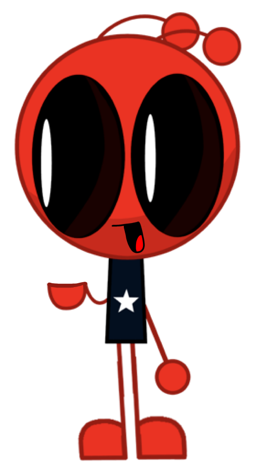
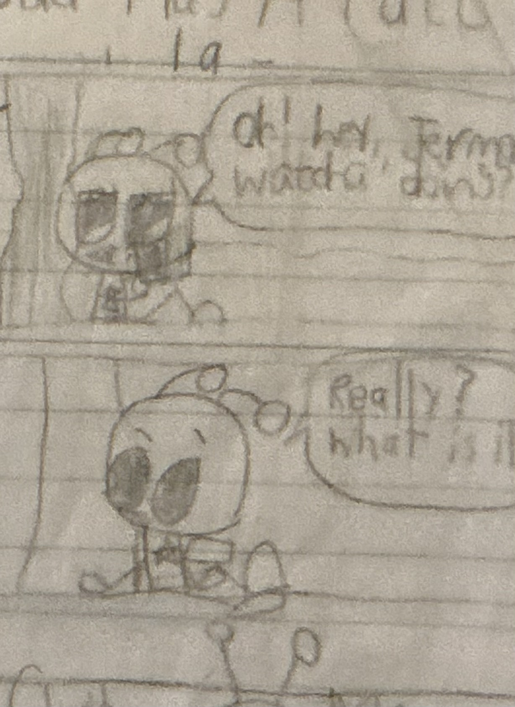

Jstar


| Jstar Berrison | |
|---|---|
| Character information | |
| Species | Alien |
| Age | 18 |
| Color | Red |
| Occupation | Spaceraids employee |
| Residence | Starland, Planet Blue-Dust |
| Family | Janicia Berrison (mother), Corey Berrison (father), Junior and Dream (younger siblings) |
| Friends and housemates | Stickman and Simariki |
Overview
Jstar Berrison is the main protagonist of The Incredible Adventures of Jstar (TIAOJ), also known as redJSR TIAOJ. He is an 18-year-old red alien who lives in Starland on Planet Blue-Dust. Jstar is recognizable by his dark blue shirt with a white star, which matches his usual clothing style.
Appearance
Jstar is a red alien with antennae. He wears a dark blue shirt featuring a white star.
Personality
Jstar has a temper and can become frustrated, particularly with his working life. His everyday experiences are often ordinary and sometimes irritating. His role at Spaceraids has earned him the comparison of being the "Squidward of Spaceraids."
Despite his frustrations, receiving his paycheck is one of the moments that makes him happiest. When he is not working, he enjoys relaxing on the couch and using his computer.
Occupation
Jstar works at Spaceraids, located in downtown Starland. His job is a recurring part of his daily life and is often associated with his frustration. Getting paid, however, is a highlight for him.
Relationships
- Janicia Berrison: Jstar's mother.
- Corey Berrison: Jstar's father.
- Junior: Jstar's seven-year-old younger brother, who lives with him.
- Dream: Jstar's six-year-old younger sister, an inventor who has her own laboratory.
- Stickman: Jstar's longtime friend. They met in fifth grade and live together.
- Simariki: Jstar's 17-year-old squirrel friend and inventor, who also lives with him.